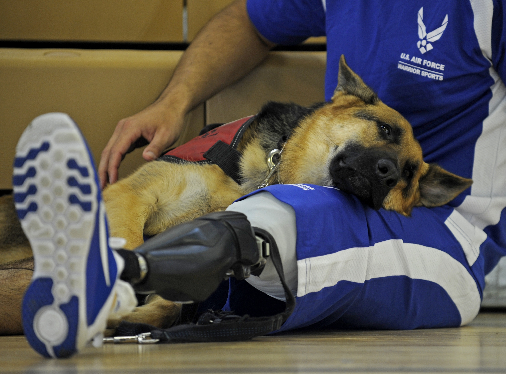
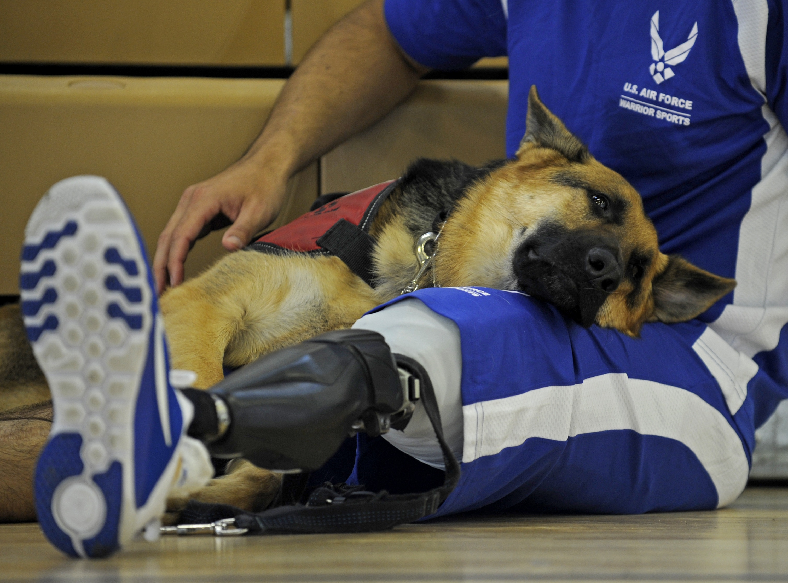

Sobre o que é este projeto?
Santos é uma cidade maravilhosa (disso todos nós sabemos), mas será que todos nós, independente da necessidade para mobilidade, conseguimos aproveitar tudo o que a cidade tem a oferecer?
No Brasil existem cerca de 200 milhões de habitantes e 6,2% destes habitantes possuem dificuldades para locomoção. Esse parece um número pequeno, mas equivale a 12.400.000 milhões de pessoas. Dá pra acreditar?
Se formos relacionar estes números com a realidade santista, temos aproximadamente 419.086 habitantes, sendo 25.983 com algum tipo de deficiência. Apesar de tantas pessoas com essa condição, quantas você vê no seu dia-a-dia fazendo atividades como ir à praia ou tomar uma gelada no bar?
Nossa intenção é mostrar a importância de existirem lugares com acessibilidade inclusiva para pessoas com a capacidade de locomoção reduzida poderem aproveitar Santos, separando os locais em quatro categorias: lazer, gastronomia, esporte e oportunidades.
Este projeto serve para todos: pessoas com deficiência, amigos, familiares e entusiastas da causa. Mesmo que você não tenha nenhum familiar ou amigo com essas dificuldades mas gostou da ideia, é importante divulgar para quem precisa.
Quem estão por trás do projeto são os co-idealizadores Isadora Coffani (@icoffani) e Marcus Vinicius Spatari (@marcusbarbaro). Para entrar em contato diretamente com eles, use os emails: isacoffani1@gmail.com e marcus.barbaro@gmail.com, respectivamente. Também temos o email geral para o contato de toda a equipe: deficienteemsantos@gmail.com
 
